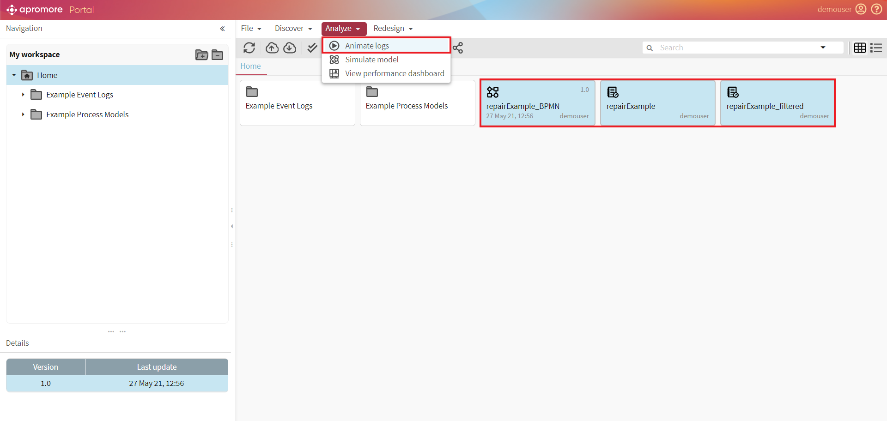
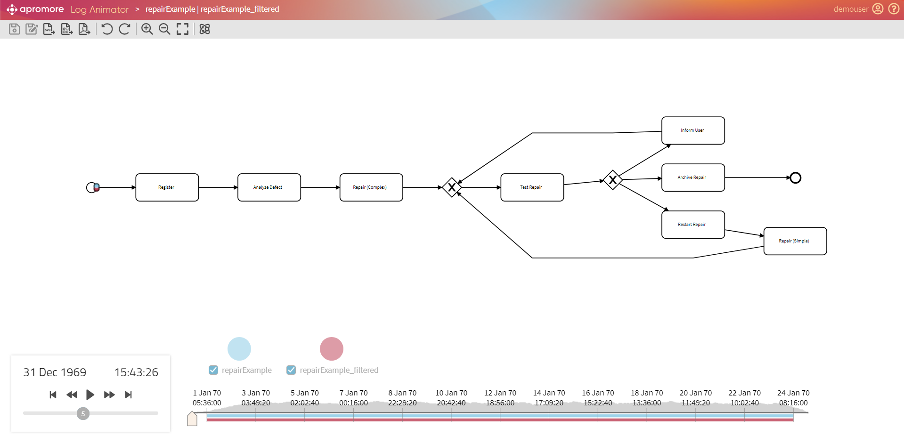
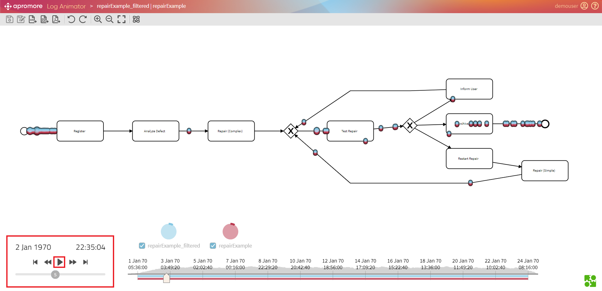
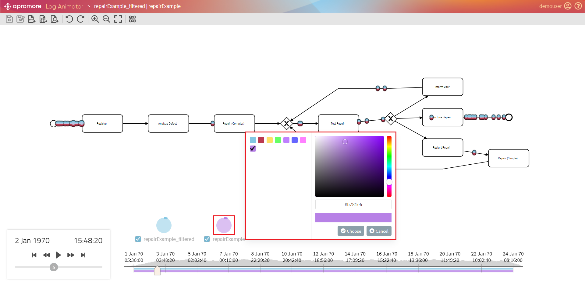
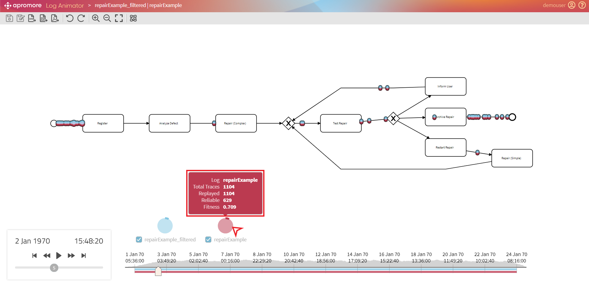
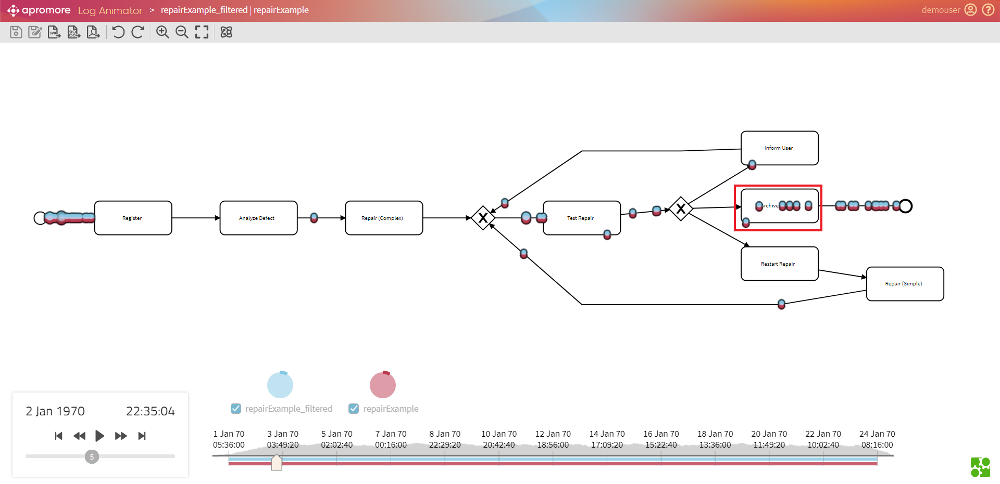
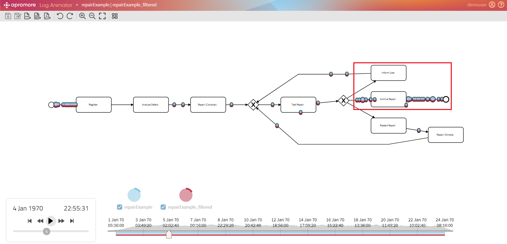
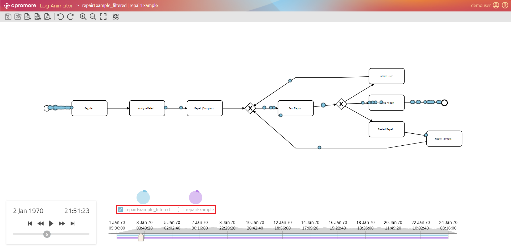

Animate logs (BPMN model)
Apromore allows us to animate one or more event logs to be replayed on top of a BPMN model. When using multiple logs, these could capture different variants of the same business process, while the process model would represent a normative specification of how things should be performed within an organization.
We can select one or more logs and one BPMN model from the repository, and click Analyze > Animate logs. In case we want to animate a single event log on top of a BPMN model, we can also switch the view from Process Map to BPMN Model in the Process Discoverer and click the Animate button.

A window will open up showing the BPMN model along with the timeline.

Standard Controls
The animation will start by clicking on the Play button. Each token represents the progress of a particular process instance (a case), with the token’s color encoding the log the case comes from.

Standard controls are available to play, pause, fast or slow forward/rewind the animation and to skip through the end/beginning. The replay speed can be changed with the vertical bar. These actions are also available during the animation. If the view on the model is zoomed in/out, or the model layout is changed, the tool will try to adapt the animation to the new position of the elements on the canvas.
Tip
To zoom-in/zoom-out, press Ctrl and use the mouse scroll wheel.
We can change the color of tokens of a specific log by clicking on the pie chart next to the needed log name.

Note
We can either choose from the default colors or add the customized ones. To add a customized color - enter a color code or drag the mouse over the palette.
To check log-related statistics, hover over the pie chart next to the needed log name.

Token Traversal
A token traversing an activity indicates that the case captured by that token is performing that activity. However, if the token goes around an activity’s border, this indicates that the particular activity is skipped in that process case.

A large number of tokens slowly traversing a given path may indicate a performance bottleneck, e.g. cases pile up in a particular point of the process due to resources unavailability.

For visualization purpose, we can hide and show individual/multiple log tokens by unchecking/checking the checkbox below the pie chart.
